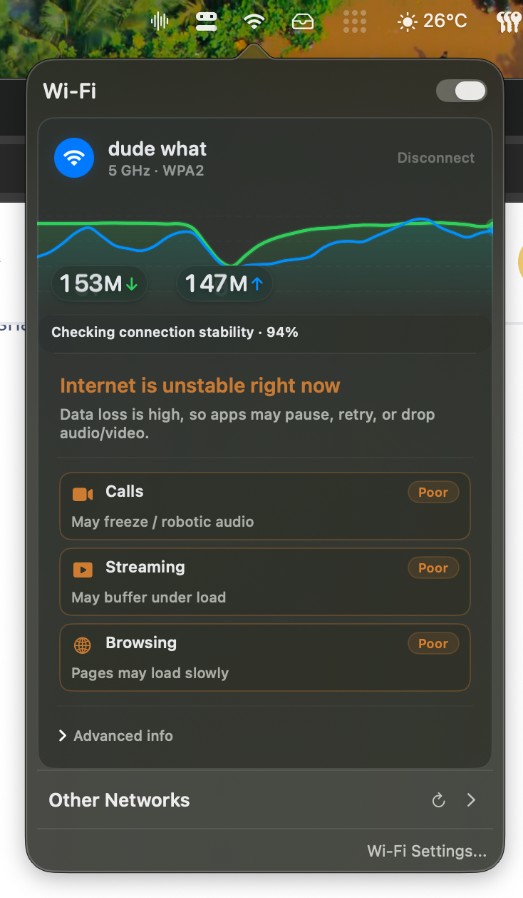

Outcome-first readiness
See whether calls, streaming, and browsing are likely to hold up before you join another meeting and hope for the best.
MacWiFi gives you the practical answer first: is this connection good enough right now for calls, streaming, or just getting work done? Then it tells you where the problem is likely coming from.

Why it exists
The annoying version of bad internet is when everything looks fine, but your call still stutters and you still have no idea what to blame. MacWiFi is built around that moment.
It doesn’t start with raw networking trivia. It starts with the question people actually ask:
Is this connection good enough right now, and if not, is the weak spot my Wi-Fi or the internet itself?
Core features
See whether calls, streaming, and browsing are likely to hold up before you join another meeting and hope for the best.
Router latency, packet loss, DNS timing, and public path checks help MacWiFi make a practical call about where the issue lives.
Quick scan, quick answer, quick escape. It stays lightweight and close at hand instead of feeling like a heavyweight network tool.
Inside the app
The top layer tells you what matters now. The lower layers explain why, with enough detail to make a smarter next move.


Demo
The app is small on purpose. The menu bar icon opens a focused panel with the live graph, diagnosis, activity readiness, and the advanced split between local Wi-Fi issues and internet-side issues.
Why it feels different
The app leads with practical confidence, not an intimidating wall of metrics.
If it points at Wi-Fi or at your ISP, it does that using multiple checks instead of a single shaky metric.
It belongs in the menu bar, ready for the moment your connection starts acting suspicious.
FAQ
It combines throughput, responsiveness, router and public ping checks, packet loss, latency behavior, and DNS response timing to judge whether your connection is holding up.
Not really. Speed is part of the picture, but the main goal is to tell you whether real tasks are likely to work and where the problem is likely happening.
No. It’s a native macOS app with a lightweight utility feel. You download it and use it.
macOS requires location access for apps that want to read SSID names during Wi-Fi scans. Without it, some network names may be hidden.
Resources
Written around the practical troubleshooting question: is the weak spot your local Wi-Fi, the internet path beyond it, or both?
Guide
A practical comparison of the main Mac network tools and which job each one actually does well.
Read the guideTroubleshooting
A faster way to separate local wireless trouble from internet-side instability.
Read the guideTroubleshooting
What packet loss means, how to test it, and how to figure out where it starts.
Read the guideMacWiFi
One-time purchase. Native app. Practical answers when your internet starts acting up.